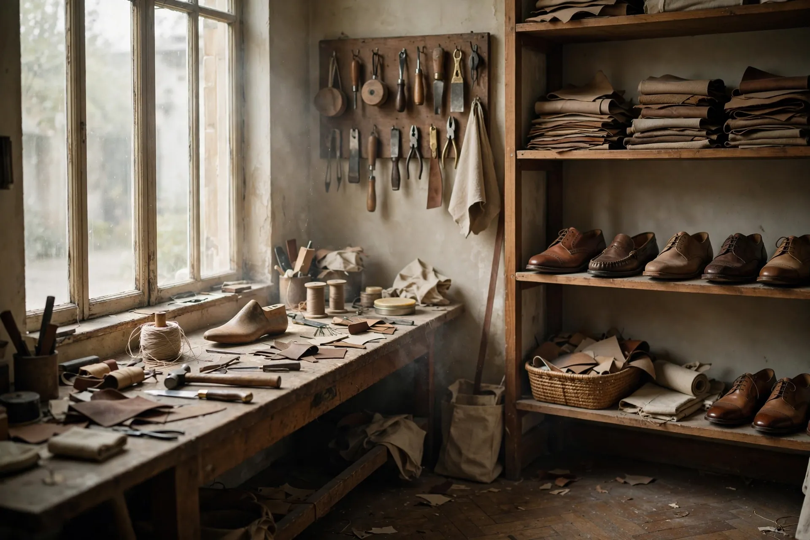

Cerita di balik sepasang sepatu.
Jejakara dimulai dari satu pertanyaan sederhana: berapa lama waktu yang pantas diberikan pada satu pasang sepatu?
Jawaban kami, saat itu dan sekarang, adalah lebih lama dari yang biasanya diminta pabrik. Sepatu kami tidak dirancang untuk satu musim. Bentuknya dibuat mengikuti jejak kaki pemakai, bahan dipilih karena menua dengan baik, dan jumlah tiap edisi dibatasi supaya tidak satu pun jahitan lolos tanpa diperiksa.
Kami bekerja dengan pengrajin di Yogyakarta — pemahat kayu, pembuat sol, tukang jahit sisik — masing-masing menangani bagiannya sendiri, seperti urutan di sebuah bangunan. Tidak ada yang mengerjakan semuanya, dan tidak ada yang terburu-buru.
 Memahat sol jati — Yogyakarta
Memahat sol jati — Yogyakarta
Filosofi
“Yang dibuat cepat, cepat juga lupakan. Yang dibuat pelan, terus dikenakan.”
Kami memilih kayu jati dan kulit tan nabati bukan karena alasan romantis, tetapi karena keduanya justru makin bagus setelah dipakai: kayu menggelap, kulit membentuk bentuk kaki, jahitan melunak. Sepatu yang menua dengan baik adalah sepatu yang tidak perlu diganti.
Setiap pasang diberi nomor edisi. Bukan untuk kesan eksklusif, tapi supaya asal bahan dan tangan pembuatnya bisa ditelusuri — hari ini, atau sepuluh tahun lagi saat sepatu itu perlu diperbaiki.